Bhutan is called the happiest country in the world.
It is a beautiful country. The weather is pretty good. This country is full of mountains and valleys, so we hardly find any plain places. Roads are also up and down. It is a totally different country. We won’t find any big factories, business centers, multi-story buildings, or shopping complexes. Most of the houses are made out of wood. To enjoy natural beauty and trekking, one can choose this place for vacation. This country is totally free from pollution.
On the roads also, we won't find much traffic. We see very little car movement. Mostly they are Indian cars. For this country, India helps a lot. Most of the things they get only from India. They cultivate potatoes, carrots, etc. Even food grains mostly they get from India. The Indian army helps them to protect their border. So you can find lots of Indian army movements in Bhutan.
For Indians to visit this country, a visa is not required. For identity and to provide a visiting permit, they need a passport or election card. They do not consider PAN card or Aadhaar card or any other documents like a driving license, etc. The election card also should be perfect. Damaged or duplicate cards (if we apply for updating the card, the Govt of India issues a new card with an endorsement of 'duplicate') are not considered by the Bhutan Govt for issuing a permit to visit.
Bhutan has many rivers, being close to the Himalayan mountains. One of the hydraulic power stations is operated by the Indian Govt, and the max share of the power is utilized by India, as Bhutan is close to West Bengal. In Bhutan, there is only one international airport. Here also, only their airlines are allowed to operate.
Ladies and gents of Bhutan wear only their traditional dress. I don’t know whether it is compulsory. I seldom saw Bhutanese wearing pants, shirts, jeans, salwars, sarees, etc. there. Gents wear something like an overcoat which covers up to their knee. Under this cover, I don’t know what sort of clothes they wear. From the King of Bhutan to the ordinary citizen, all are in the same costume.
Gents and women are healthy. I didn't find any obesity. Being a hilly area, they walk a lot. I also did not see cycles. Gents of Bhutan also follow a strict hairstyle. No long hair! Close cut like army soldiers. During my travel, I saw some Kendriya Vidyalaya (India) schools. We also came across a few convent schools.
In the food, they use potatoes all the time. For all eight days, all three times, we found a potato dish in our meals.
We did not have big baggage. So we wanted to go by bus to Mumbai International Airport. We left home after lunch and reached the bus stop around 1 O’clock. We got a sharing cab to Mumbai International Airport. We reached around 5 pm. Our flight to Delhi was at around 9 pm.
The Kesari representative came and distributed eatables for the trip. He distributed air tickets also. After distributing the tickets to all, he realized that Kesari had not booked his ticket. So we had to travel to Delhi without a tour guide. All he requested was for us to remain in the same place at Delhi where we landed. We reached Delhi airport at midnight. Of course, the Kesari representative also arrived by taking some different flight.
Till 4 O’clock in the morning, we were taking rest at the Delhi airport. Around 4 O’ clock immigration started. We filled out a form and waited in the queue. A large number of Indian soldiers were also waiting for immigration. Only one counter was marked for the public and the remaining counters were earmarked for army people. So we had to stand for a longer time.
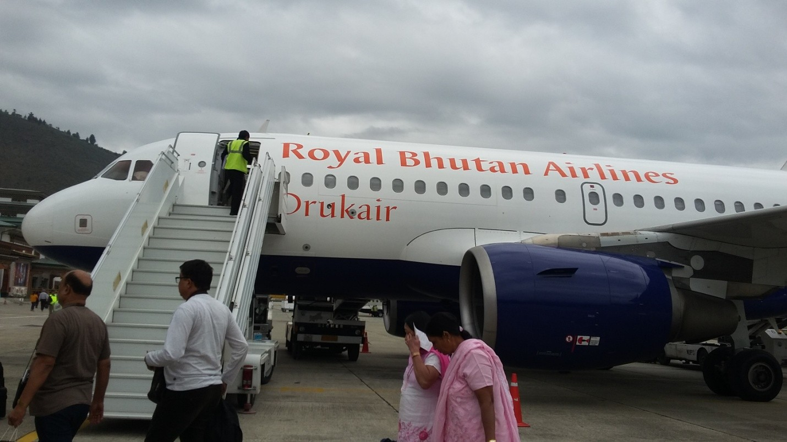
Then we stood in the queue of Druk Airlines for obtaining a boarding pass. There also they checked our ID proof. Though I was very reluctant to carry our passports (because of a valuable US visa), at the eleventh hour, I carried our passports. Of course, though my election ID card is pretty old, they did not raise any objection. But one of our group families faced trouble. Their Election ID cards were not accepted. They had to stay back at Delhi, get their passport from their home in Ratnagiri, and board a flight the next day.
The flight duration from Delhi to Paro is some 2 hours. We reached Paro around 7:30 am. The moment we came out of the aircraft, we felt the chillness. It was pretty cool. The Paro Airport Building is in Bhutanese architecture unlike other airports.
After collecting the luggage, we stood in the queue to get a permit to visit Bhutan. Again they checked the election ID card/Passport. Here one form is also to be filled. After this formality, they issued a printed letter of permission to visit this country. Our guide requested us to keep this letter safely and stated that this letter is to be submitted back to authorities while leaving this country. One stupid thing which I did was, I did not check that letter at that time. I kept that letter very safely.
Then we came out of the airport and boarded the minibus arranged by Kesari. The local guide was also present at that time. From the airport, we were taken to Mandala Resort. It is about 3-4 kilometers away from the airport. We took our breakfast and proceeded to Punakha.
The weather was cloudy and quite chill. We had to wear woolen clothes. The distance between Paro and Punakha is about 130 Km. It is a hilly way. We crossed some hairpin bends. It is a highway, but roads are not very broad. On these roads, only cars and minibusses can go. Travel time is about 4 hours. After a travel of some two hours, we had a break for taking tea. We took tea with some snacks. That place is beautiful and we took photographs.
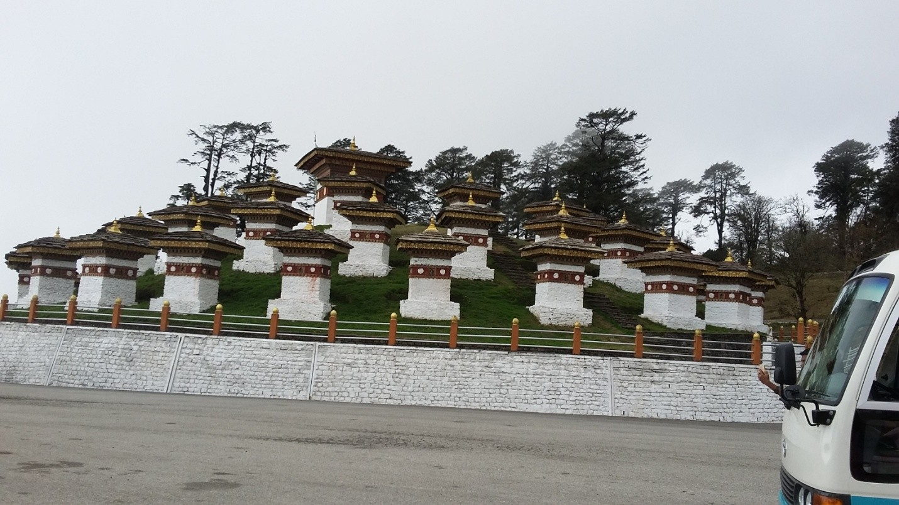
After the tea, we proceeded to Meri Puensum Resort, Punakha. The resort was excellent. We reached there around 2 pm. We had our lunch and took rest.
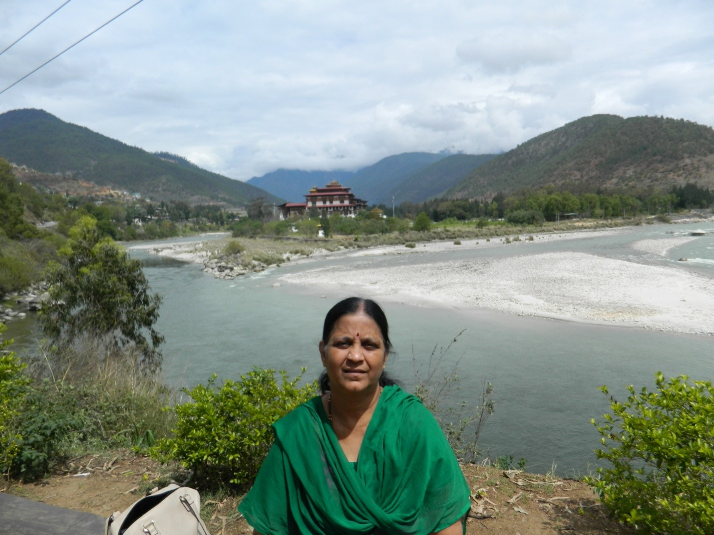
This is the second oldest and second biggest Dzong. It is at the merging point of rivers Pochu and Mochu. These two rivers combine together to form a single river Sankosh which flows down to India and merges with the Brahmaputra. Earlier Punakha was the capital of Bhutan.
In this Dzong, there are two rows of buildings. One is occupied by Government officials to carry out administrative works and the other wing is used to accommodate monks. Monks used to come to this Dzong from different places of Bhutan every September to discuss religious issues.
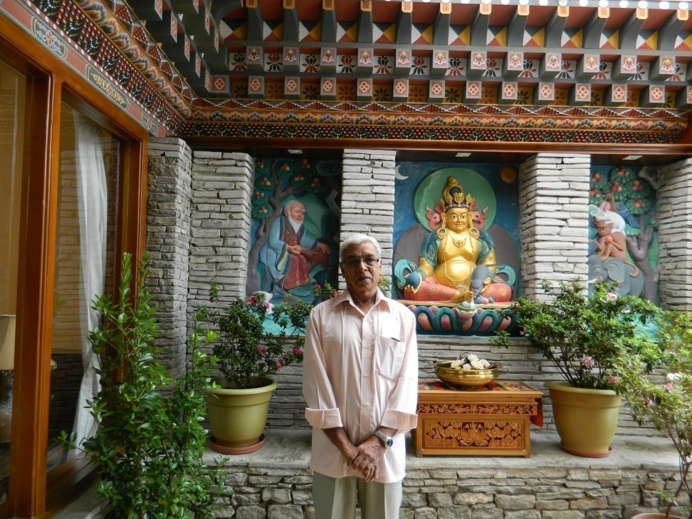
After lunch, we proceeded to Thimphu. Thimphu is the capital city of Bhutan. The distance from Punakha is about 85 Km and it takes about 3 hours. We landed at Kisa Hotel.
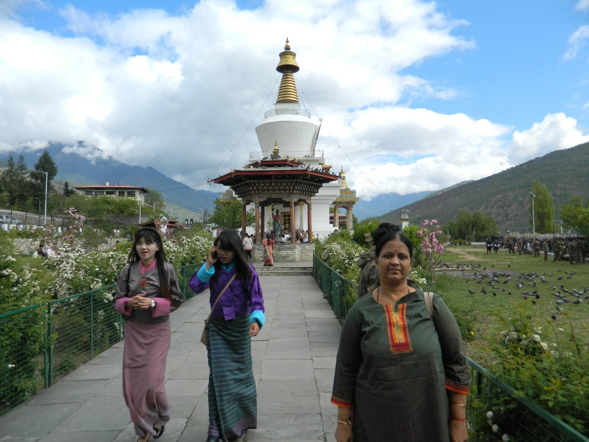
This is also called Thimphu Chorten. It is located close to the Indian Military Hospital. This Stupa was built in 1974 in honor of the third Druk (1928 – 1972). The Third Druk is considered the father of modern Bhutan. The present King is the fourth Druk.
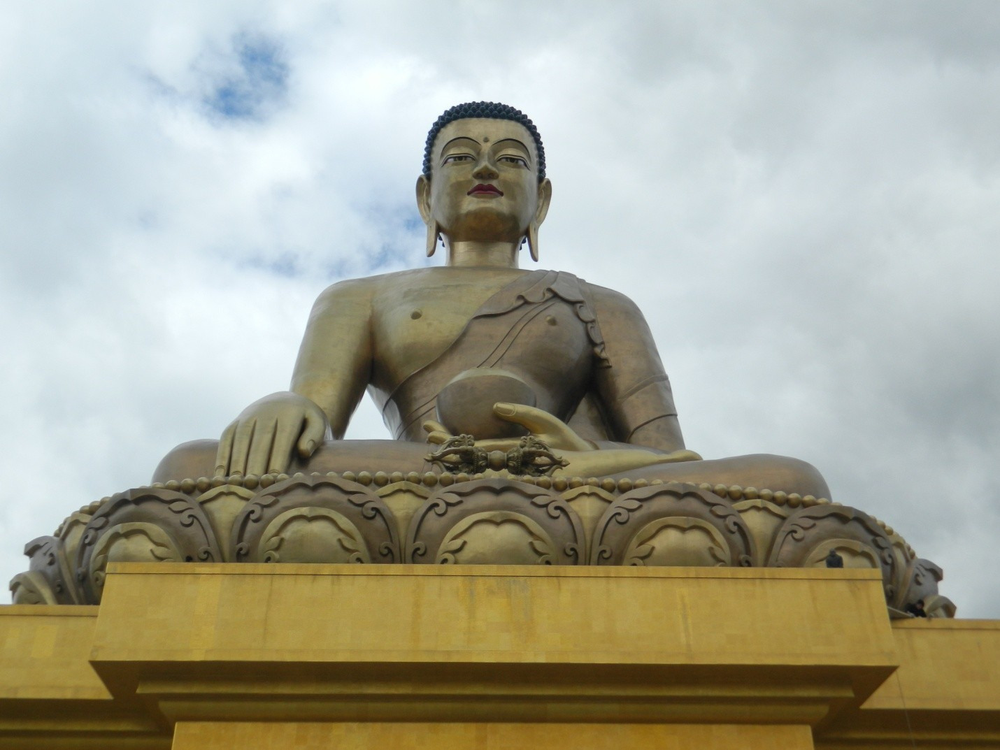
It is a gigantic statue of Buddha over a mountain. This was built in view of the 60th Anniversary of the fourth king (present King) of Bhutan. The construction started during 2006 and the work is still in progress. This is one of the largest Buddha statues in the world; the height is 168 feet and it is made out of brass. The statue is so beautiful. The Buddha statue was made at a cost of 46 million US$ in China. One hundred thousand smaller Buddha statues are around the main statue. Since it is over a hill and no buildings are in the near vicinity, against the background of the sky this statue looks marvelous.
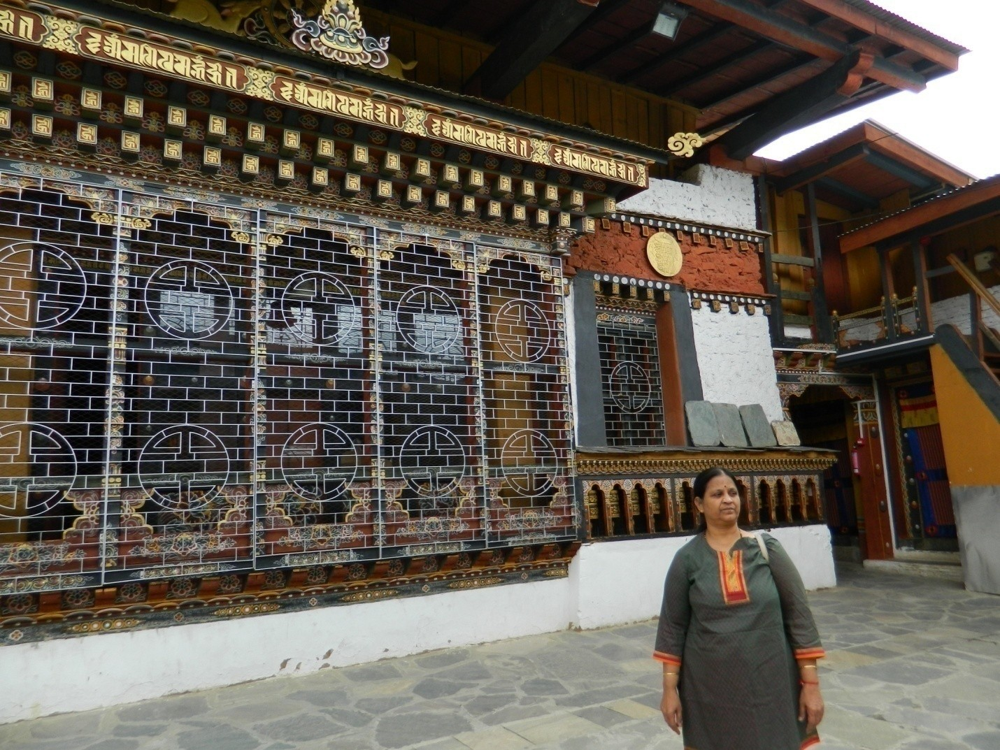
Then we visited this temple. This one is a 12th-century temple. It is the oldest temple in Thimphu. It has an idol of Avalokiteshvara, the God of Compassion. Couples bring their young ones to get the blessings of the deity, especially during ill health. The newborns are brought here for naming. Also, it is believed that whoever comes here and prays for fulfilling his/her wishes, they get fulfilled. Also, people donate liberally to this temple. I saw large currencies at the feet of the deity.
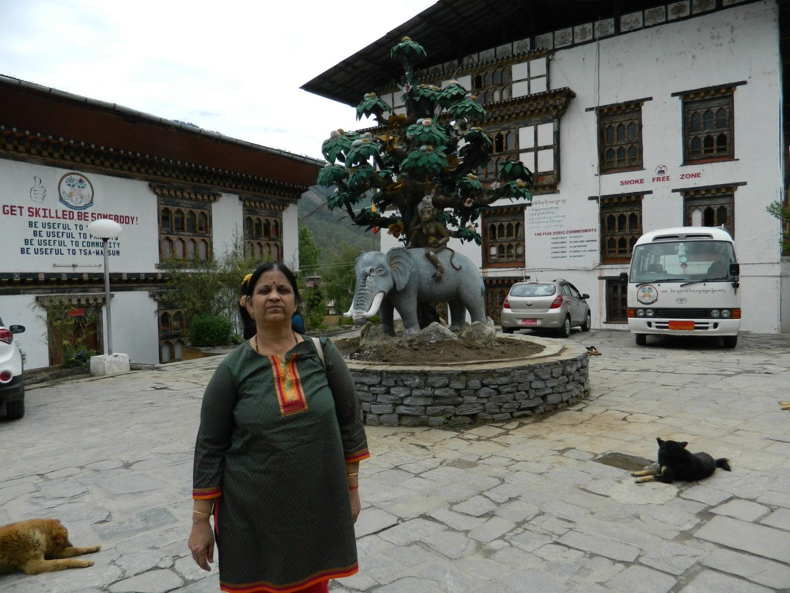
It is a museum run fully by the youth and supported by the Bhutan Youth Development Fund. The museum gives a glimpse of traditional Bhutanese life. There is a small collection of typical household objects and tools.
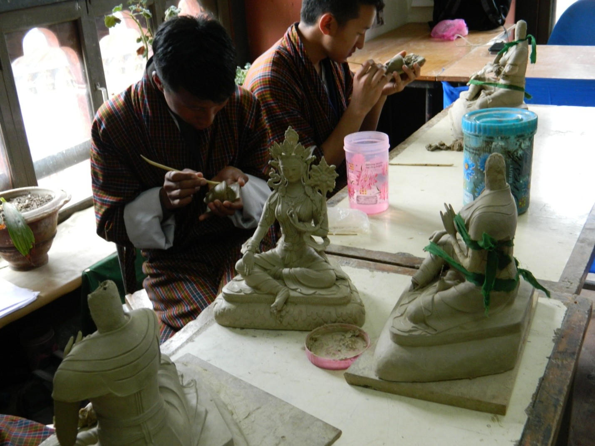
Then we went to an art gallery where paintings and sculptures were being made by artists. These things are being sold also. We also visited one library.
After this, we went back to the hotel and took our lunch. After a brief rest, we proceeded to see a paper-making factory.
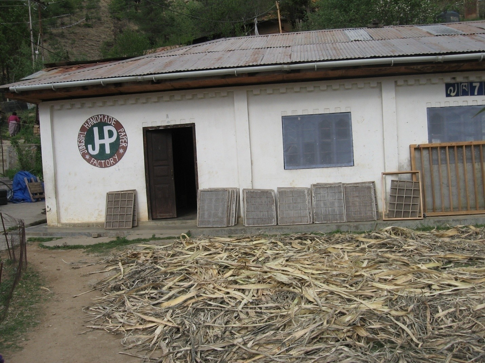
A kind of dried plant is used to make handmade paper. These dried plants are put in water and manually tore into thin strings. Then by machines, they make pulp. Then the pulp is squeezed and made into thin sheets by rollers and spread into a mesh. By keeping it in a warm place, these are dried up and the paper is removed from the mesh and cut into proper size.
In these handmade papers, paintings are also made. These papers are durable and remain for years together.
After the factory, we were taken for shopping. People who came with us started buying showpieces, woolen clothes, etc. But we did not find anything interesting to buy. So we were roaming around the street. At last, we returned back to the hotel.
Just before dinner, incidentally, I saw the permit issued to me at the airport. I was shocked to see the departure date mentioned in that was 27th April, instead of 28th April. I checked my Mrs.'s permit and I found that the date was written correctly. Then I told the tour guide and fortunately, the local guide was also with us. He assured me that he would take me to the concerned office to correct it on the very next day.
After breakfast, we left Thimphu. Our local guide took me to the embarkation office which was on the way to the BBS viewpoint. Luckily in the embarkation office, they corrected my permit paper and it hardly took a few minutes. I was relieved from my tension.
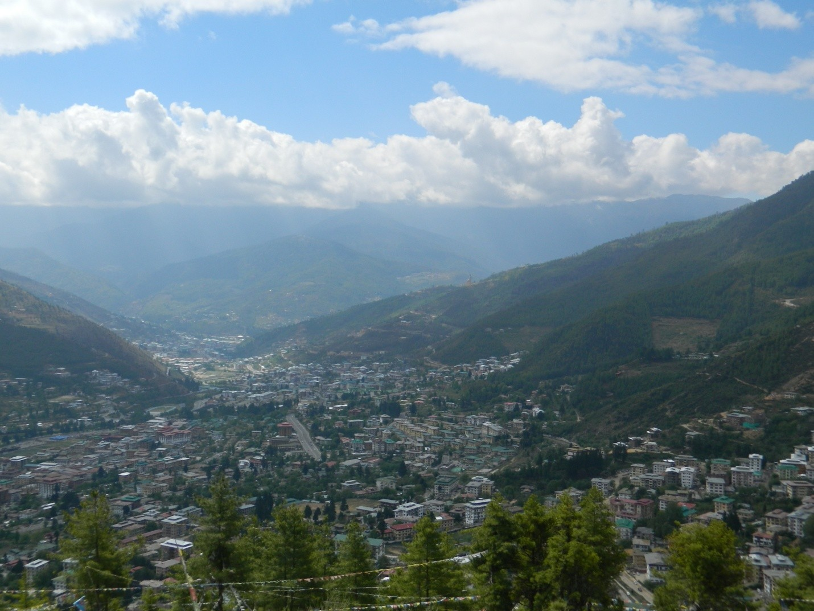
The Bhutan Broadcasting Service tower is located over a mountain of height around 2600 mts. From the hilltop, we can see the valley of Thimphu.
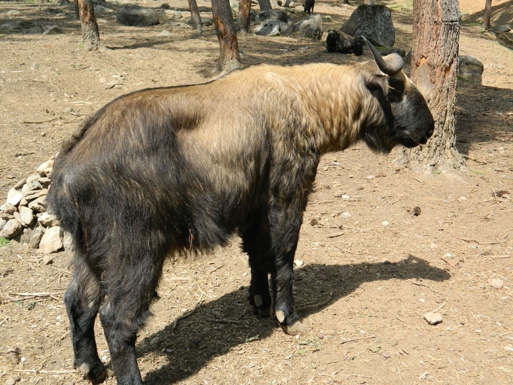
The Takin is the national animal of Bhutan. It stays over the mountains of Bhutan.
After seeing the zoo we started moving to Paro. It is about 50 Km away from Thimphu. It takes about 1 hour and 30 minutes. We were accommodated in Mandala Resort, Paro. After taking lunch we took rest and we went for shopping in the evening. At night we had a gathering and spent some time playing some different games.
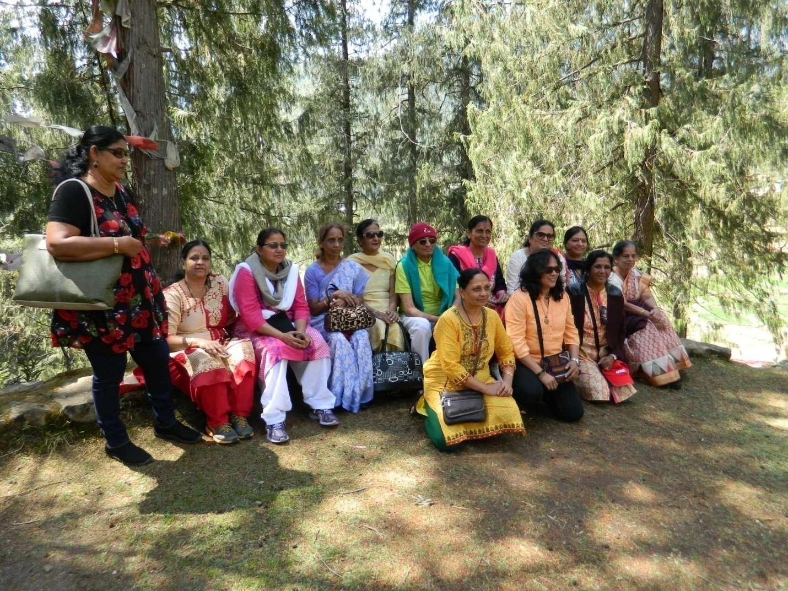
Drukgyal Dzong was a fortress and Buddhist monastery. It was built in 1649. But in 1950 it was totally destroyed by a major fire accident. Again it was rebuilt. We could not visit this, as it was being renovated when we visited. We saw it from a distance only.
On the way back we saw Tiger’s Nest from the distance.
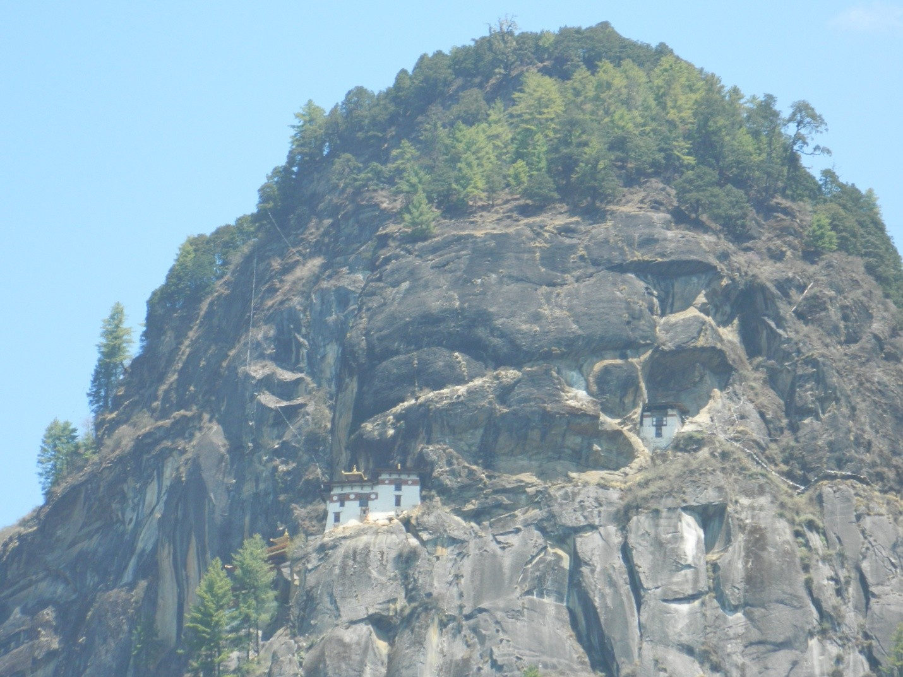
The Palphug Monastery, called Tiger’s Nest, is a prominent Buddhist sacred place in the Himalayan mountains. It is on the cliffside of Paro Valley. It is above 3000 feet from Paro Valley. We went to the base area of the Tiger’s Nest.
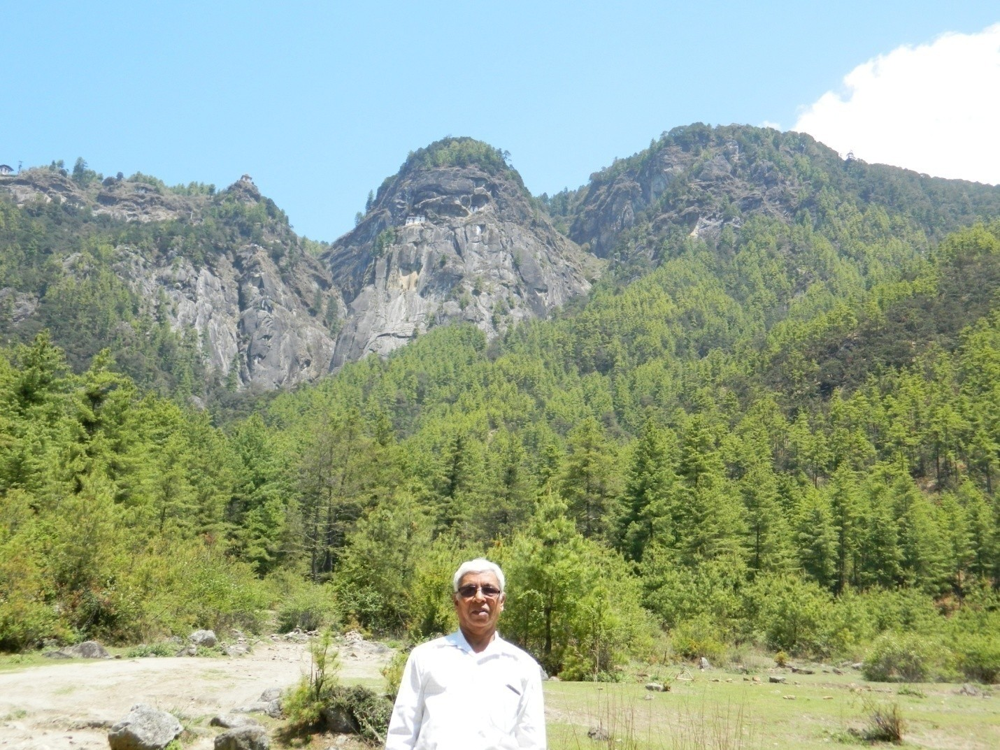
We walked some distance, but we understood, it is very steep. Walking to the top is not an easy thing. Many youngsters are coming to Bhutan for doing trekking to this sacred place. On the way, we saw some girls returning from halfway complaining that they found it difficult to breathe and also it is quite steep. After hearing this we abruptly decided to turn back.
After Tiger's Nest, we proceeded to Ta Dzong Museum. It is located above the Paro Rinpung Dzong. It is a cultural museum. Actually, 'Ta Dzong' means watchtower as it was used to serve as a watchtower and fortress to protect the Paro Rinpung Dzong.
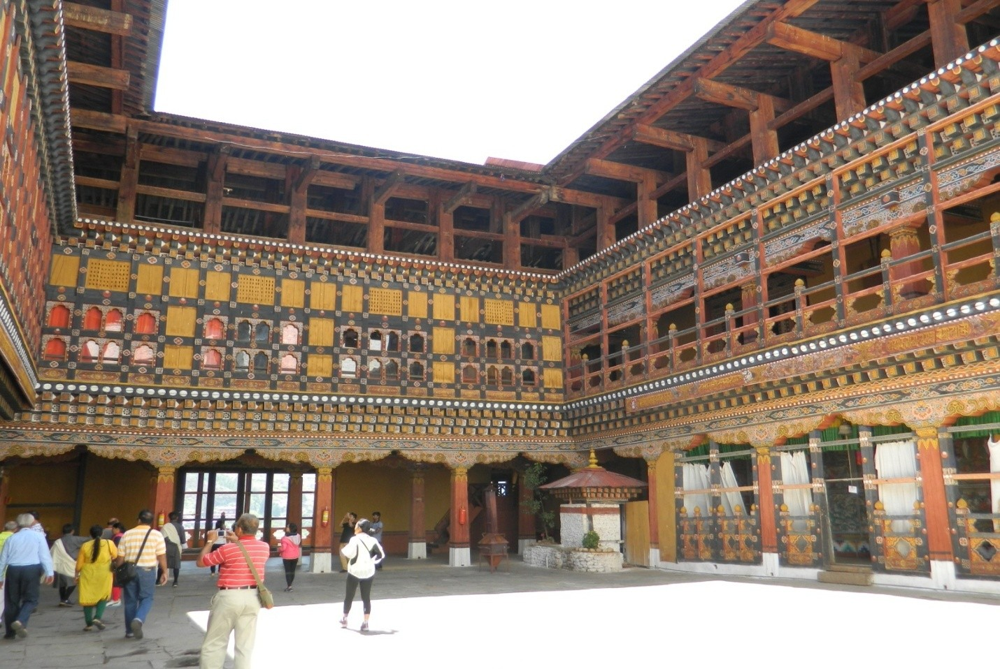
It is the biggest Dzong of Bhutan. The massive walls are nicely beautified by paintings. Paro Dzong ranks as the high point of Bhutanese architecture. The structure is so big that it is visible throughout the valley of Paro. Also, nice lighting arrangements are made on the outer structure. During the night this can be seen from the Mandala restaurant.
Kesari arranged a local dance program on that evening.
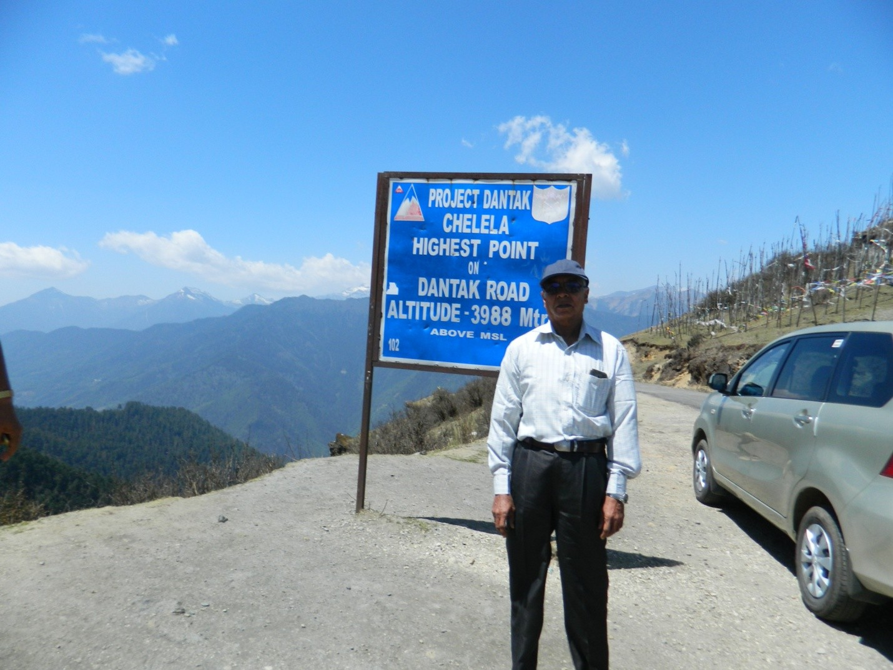
Chele La Pass is one of the highest motorable roads (3988m above MSL) in Bhutan. From Paro, it is about a 2-hour drive through dense forest. While going through this path one can enjoy the natural beauty. It is one of the Himalayan glaciers. We can see beautiful flowers also. Also, this peak is considered one of the sacred places of Bhutan. Bhutanese put different coloured flags on this peak.
The moment we got down from the bus, it was so windy and very chill. This is the most beautiful place in Bhutan. We spent some time on this peak and returned back to the hotel.
After lunch, some people went for local shopping. That day evening it was raining also.
In the morning we left our hotel Mandala around 7 O’clock. The airport was close by. After immigration formalities, we boarded the flight. When we were on board, the Pilot of the flight was kind enough to show Everest when our plane was crossing the peak. We reached Delhi around noon.
After the immigration formalities were over we were waiting for the Mumbai flight. We got the flight in the evening and we reached Mumbai late in the evening and took a cab to Pune. On the 28th night, safely we arrived back in Pune and started the preparation for the US trip.
"From the silent mountains where the Takin roams to the massive walls of the Punakha Dzong, Bhutan is a land unlike any other. It is a place where traffic is scarce, the air is pure, and happiness is a national treasure. Memories from the Land of the Thunder Dragon will remain with us forever."